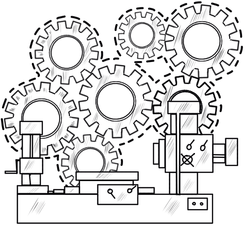
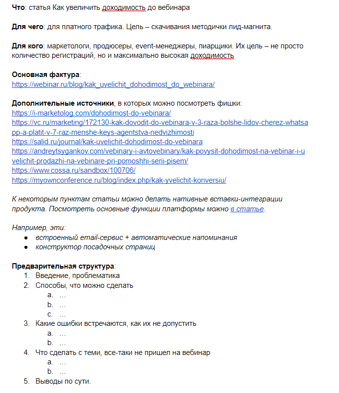
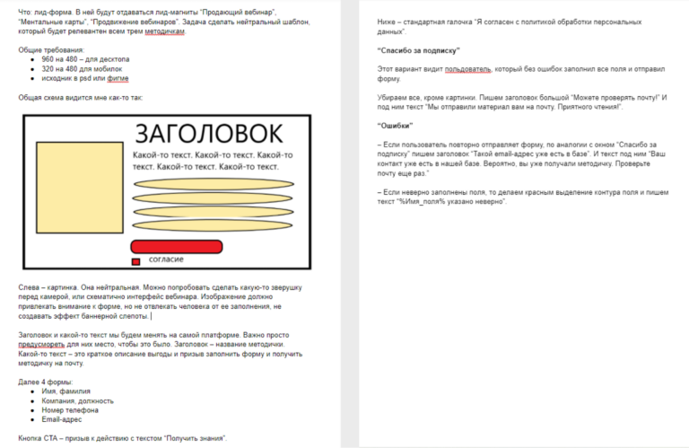
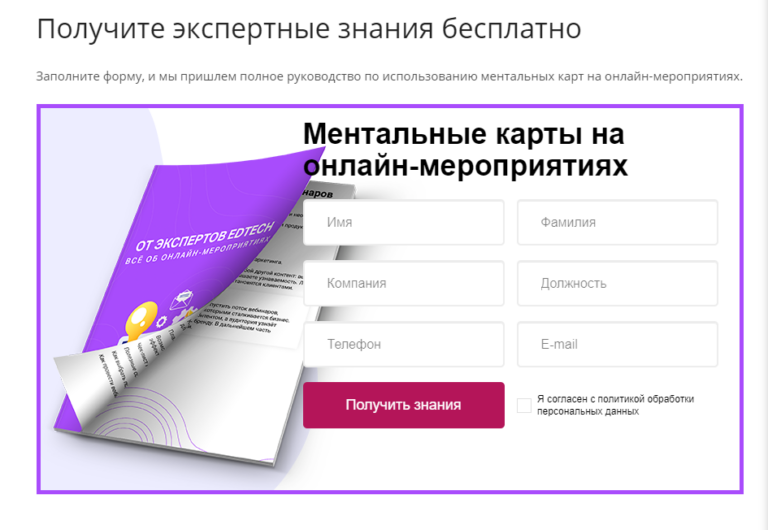
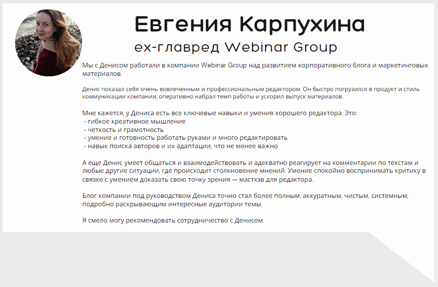

← Назад к кейсам
С февраля 2022 по июль работал редактором в Webinar Group. Компания разрабатывает сервисы для проведения вебинаров, организации онлайн-встреч и корпоративного обучения.
Тематика. Онлайн-мероприятия и обучение, интернет-маркетинг.
Что делал. Исследовал аудиторию, доказал гипотезу о конверсии информационного трафика в заявки, собрал редакцию и настроил процессы.
За что отвечал. Качество контента, количество публикаций, работу редакции блога.
Какие результаты. Собрана автономная редакция. Исправлены ошибки в блоге. Сформулирована контент-стратегия.
Webinar Group разрабатывает и продвигает несколько продуктов:
Основной сегмент клиентов — крупный бизнес, государственные учреждения. Цикл принятия решения долгий, стоимость продукта высокая. Поэтому выгодно собирать максимальный охват, прогревать аудиторию, а затем закрывать сделку.
В зоне моей ответственности были два блога: один про онлайн-мероприятия, второй — про онлайн-обучение.
Что было раньше. Блоги наполнялись по остаточному принципу. Если были ресурсы, статьи выходили.
При этом в компании была развита воронка, в которой использовали маркетинговые материалы — кейсы, методички, лид-магниты. Чаще всего на такой контент настраивали рекламу, собирали заявки, а затем информация о потенциальных клиентах уходила в отдел телемаркетинга.
Что предстояло сделать. Вначале потребовалось обоснование для развития блога. Нужно доказать, что если будет приходить трафик, он будет конвертироваться в лиды. Затем настроить бесперебойную работу блога: собрать редакцию и выстроить редпроцесс.
Чтобы блог работал как инструмент лидогенерации, нужно:
Выгода от привлечения информационного трафика появляется спустя 4-6 месяцев. При этом статьи нужно писать постоянно и в достаточно большом количестве. Чтобы обосновать, что эти вложения окупятся, мы вместе с главредом решили проверить гипотезу малыми ресурсами — заменить трафик из поиска рекламным.
Воронка выглядела так: рекламный трафик → статья в блоге с формой подписки → email-рассылка → отдел телемаркетинга → пресейл.
Переработка статей. Я выбрал три статьи, которые показывали лучший трафик, а также лучше всего подходили по теме к продукту. Например, взял тему про Miro, потому что у продукта была интеграция с сервисом. В статьи добавили еще больше примеров, экспертных мнений и советов. Получились достаточно большие и фактурные руководства. Доработка требовалась, чтобы повысить конверсию в подписку.
Важный пойнт — добавление нативных интеграций с продуктом, где это уместно. Например, в статье про Miro рассказываем, что есть интеграция, которая позволяет ведущему не переключаться между вкладками — это удобно и экономит время.

Задание на разработку лид-магнита для автора
Внедрение формы подписки в статьи. Дальше в статьи нужно добавить форму, через которую люди будут оставлять данные и настроить, чтобы все работало: подписчик получал нужную методичку, а мы — его контакты.
Схема выглядела так:
В моей зоне ответственности была разработка формы. Я ставил задачи техподдержке, UX-дизайнеру и CRM-маркетологу. Следил, чтобы все было готово вовремя. Форму делали через PopMechanic.

Это техническое задание дизайнеру на макет формы

А это готовая форма на сайте
За время своей работы я:
